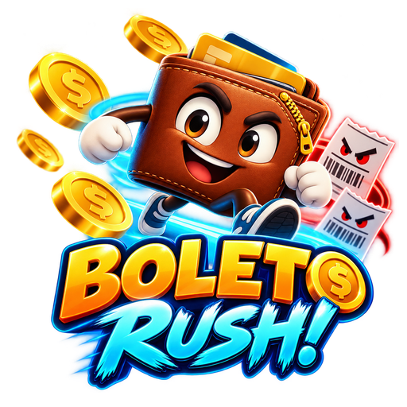

ANDROID • EM TESTES
Boleto Rush!
A vida cobra. Você desvia! Controle uma carteira, colete moedas, faça combos e escape dos boletos. Modos Clássico (45 segundos) e Maratona (90 segundos), escudos, vidas extras e recordes locais.
O jogo funciona offline. Após perder, o jogador pode optar por assistir a um anúncio recompensado para tentar reviver. A primeira publicação na Google Play está em preparação.